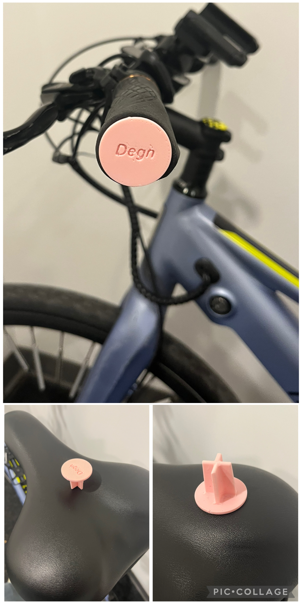

Personalized Project

This print was a cap for the handlebars of my bike because my original ones broke off. For this process, I had to measure the circumference of the opening of my handlebars and replicate it in Fusion. That was just for the cover; to ensure that it stays inside the handlebar and doesn't fall out, I had to create a long, plus-shaped pole on one end that is slowly getting narrower as it gets further from the top. This allowed it to match the shape of the handlebars and stay with a tight fit. This part was more difficult because it was difficult to find out how much the opening of the handlebar shrinks as it gets closer to the middle. This could only be solved through trial and error. This print forced me to use new tools and features of Fusion that I had never used before. Since the inner part of the handlebar was circular, I also had to curve the pole so it could slide in. To do this, I was introduced to the fillet function, which allowed me to add curves to every side of the walls where they connected. Then, to make the length of the pole accurate, I learned how to create a new layer to sketch on and put it at my desired height, allowing me to put the end of the pole there and connect it to the cap using the loft feature. This project definitely enhanced my fusion and problem-solving skills while being fun because I was fixing a problem that was personal to me.
Here is a link to acess my design on pritables: https://www.printables.com/model/1480747-handlebar-cap